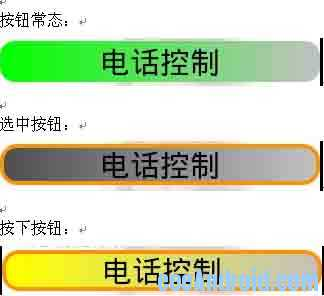

Android Button美化实例
我们先来看看效果图：

背景配置文件：button_bg.xml
<?xml version="1.0" encoding="UTF-8"?><selector xmlns:android="http://schemas.android.com/apk/res/android">
<item android:drawable="@drawable/button_focusedandpressed" android:state_pressed="true"/>
<item android:drawable="@drawable/button_focusedandpressed" android:state_focused="true" android:state_pressed="true"/>
<item android:drawable="@drawable/button_defocused" android:state_focused="false" android:state_pressed="true"/>
<item android:drawable="@drawable/button_focused" android:state_focused="true" android:state_pressed="false"/>
<item android:drawable="@drawable/button_defocused" android:state_focused="false"/>
</selector>
button_defocused.xml //实现渐变色的效果 （焦点不在button上，且未按下）
<?xml version="1.0" encoding="UTF-8"?><shape xmlns:android="http://schemas.android.com/apk/res/android" >
<!-- 颜色渐变效果 -->
<gradient
android:angle="0
android:endColor="C0C0C0
android:paddingTop="5dp
android:startColor="00FF00" />
<!-- 按钮四个角的平滑度 -->
<corners android:radius="15dp" />
</shape>
button_focused.xml （焦点在button上，但没有按下）
<?xml version="1.0" encoding="UTF-8"?><shape xmlns:android="http://schemas.android.com/apk/res/android" >
<!-- 颜色渐变效果 -->
<gradient
android:angle="0
android:endColor="C0C0C0
android:paddingTop="5dp
android:startColor="505050" />
<!-- 按钮四个角的平滑度 -->
<corners android:radius="15dp" />
<!-- 焦点在按钮上时光环的宽度与颜色 -->
<stroke
android:width="4dp
android:color="FFFF9200" />
</shape>
button_focusedandpressed.xml (按钮按下时，或被点击时)
<?xml version="1.0" encoding="UTF-8"?><shape xmlns:android="http://schemas.android.com/apk/res/android" >
<!-- 颜色渐变效果 -->
<gradient
android:angle="0
android:endColor="C0C0C0
android:paddingTop="5dp
android:startColor="FFFF00" />
<!-- 按钮四个角的平滑度 -->
<corners android:radius="20dp" />
<!-- 焦点在按钮上时光环的宽度与颜色 -->
<stroke
android:width="4dp
android:color="FFFF9200" />
</shape>
字体颜色配置文件：button_font.xml
<?xml version="1.0" encoding="utf-8"?><selector xmlns:android="http://schemas.android.com/apk/res/android">
<item android:state_selected="true" android:color="FFF"/>
<item android:state_focused="true" android:color="FFF"/>
<item android:state_pressed="true" android:color="FFF"/>
<item android:color="000"/>
</selector>
//用法;
<Button
android:layout_width="fill_parent
android:layout_height="wrap_content
android:background="@drawable/btn_ctrllist
android:textSize="30dip
android:id="@+id/button_cal
android:text="电话控制"/>